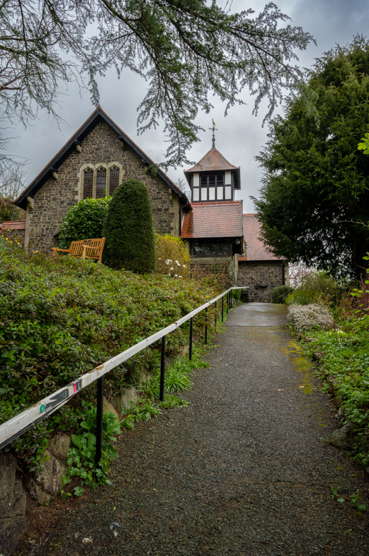
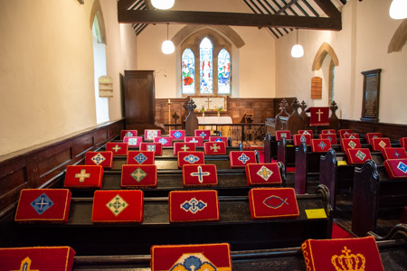
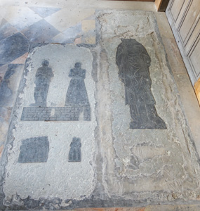
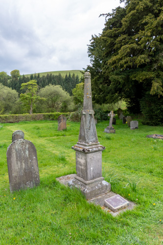

9. Modern Britain (1901 AD onwards)

The Church of England experiences decline...and the consecration of the first female bishop...
The Church of England experienced a decline in the 20th Century, marked by falling membership, church attendance, and clergy numbers, especially after 1970. This decline is attributed to factors like secularization, the social and cultural changes following the World Wars, and a loss of relevance in modern society, which have led to fewer people identifying with or attending the church.

Church Building - 20th Century
Church building in Shropshire continued in the 20th Century, but at a much reduced rate. Throughout the Century, designs became contemporary and modern.
The first churches to be built after the Victorian era were St Michael, All Stretton (1902) and All Saints, Little Stretton (1903).

St Michael, All Stretton

All Saints, Little Stretton

Kneelers
A kneeler is a cushion (also called a tuffet or hassock) or a piece of furniture used for resting in a kneeling position during Christian prayer.
In many churches, pews are equipped with kneelers in front of the seating bench so members of the congregation can kneel on them instead of the floor. In a few other situations, such as confessionals and areas in front of an altar, kneelers for kneeling during prayer or sacraments may also be used. Traditionally, altar rails often have built-in knee cushions to facilitate reception of Holy Communion while kneeling.
Kneelers in churches are a modern development. Kneeling was not part of the Mass in early Christianity, and has been part of the Catholic Mass only since the 16th century.

St Margaret, Ratlinghope - Kneelers
1910 AD
Charles Dickens knew Tong and in his story The Old Curiosity Shop it is thought the village where Nell Trent dies was based on Tong in Shropshire.
The popularity of the novel brought many visitors to Tong and the church.
In 1910 the verger at Tong created a false entry in the parish register to state that Nell Gwyn (in error) was buried at Tong.

St Bartholomew, Tong - Little Nell's Grave
1914 AD (18th September)
The Welsh Church Act is given royal assent.
This led to the creation of the Church in Wales, the Act had long been demanded by the Nonconformist community in Wales, which composed the majority of the population and which resented paying taxes to the Church of England.
The impact on Shropshire was The Church of England border polls of 1915–1916.
Reference: Wikipedia - Welsh Church Act 1914
1915 to 1916 AD
There were nineteen Church of England ecclesiastical parishes, the boundaries of which crossed the England–Wales border, and so, as a result of the Welsh Church Act, a series of referendums were held to determine if the parishioners wanted to remain with the Church of England or join the Church in Wales. All of the churches in Shropshire voted to remain with the Church of England:
- Alberbury
- Great Wollaston
- Llanymynech
- Lydham
- Mainstone
- Middleton
Diocese of St Asaph
Some Shropshire parishes (specifically the Oswestry deanery) were originally part of the Diocese of St Asaph before being transferred to the Diocese of Lichfield.
Reference: Wikipedia - Diocese of St Asaph
1919 AD (23rd December)
The Church of England Assembly (Powers) Act 1919 is given royal assent. This act enables the Church of England to submit primary legislation called measures, for passage by Parliament. Measures have the same force and effect as acts of Parliament. The power to pass measures was originally granted to the Church Assembly.
Reference: Wikipedia - CofE Assembly Powers Act
1926 AD (4th March)
A bishopric of Shrewsbury had originally been proposed by Henry VIII (i.e. to make Shropshire a diocese in its own right). In the mid-1920s, a Church of England measure, was once again discussed, it was defeated in parliament by 61 votes to 60 on 4th March 1926.
Reference: UK Parliament
1926 AD
The book A list of Monumental Brasses in the British Isles by Mill Stephenson is published.

St Peter, Adderley - Brasses
References:
A list of Monumental Brasses in the British Isles
Wikipedia - Monumental Brasses
1940 AD (25th January)
Eric Knightley Chetwode Hamilton KCVO (1890 – 21 May 1962) is appointed Bishop suffragan of Shrewsbury in 1940 (the post had been abeyance since 1905). He was consecrated a bishop on the feast of the Conversion of Paul (25 January) 1940, by Cosmo Lang, Archbishop of Canterbury, at Westminster Abbey.
Reference: Wikipedia - Eric Hamilton (bishop)
1958 AD
Sir Nikolaus Pevsner first publishes the Buildings of England (Shropshire volume).
He famously remarked that the great attraction of Shropshire is that it does not attract "too many" people.
1969 AD (25th July)
The Synodical Government Measure 1969 is given royal assent, it is a Church of England measure passed by the National Assembly of the Church of England replacing the National Assembly with the General Synod of the Church of England.
1969 AD
The Redundant Churches Fund is established, this becomes the Churches Conservation Trust (CCT) in 1994.
The fund came into being by Church of England's Pastoral Measure of 1968, which included:
Redundant Churches are Other Religious Buildings Act 1969
The CCT churches in Shropshire are:
- Shrewsbury, St Mary the Virgin
- Battlefield, St Mary Magdalene
- Preston Gubbals, St Martin
- Wroxeter, St Andrew
- Stirchley, St James
- Linley, St Leonard
- Longford, Talbot Chapel
- Upton Cressett, St Michael
- Bridgnorth, St Leonard
- Adderley, St Peter
1974 AD (12th December)
Church of England (Worship and Doctrine) Measure 1974 is given royal assent.
The Church of England (Worship and Doctrine) Measure 1974 gave the General Synod the power to reform the liturgy of the Church of England, repealing the Act of Uniformity 1548.
1981 AD (23rd September)
Stanley Mark Wood is consecrated as the first suffragan Bishop of Ludlow (the Suffragans Nomination Act 1888), and the only suffragan bishop in the diocese of Hereford.
Reference: Wikipedia - Mark Wood (bishop)
1982 AD
In 1982 archaeologists uncovered the skeleton of a man at Wenlock Priory, he had been buried with a glazed ceramic cup. The identity of the man is unknown, but the cup was a mortuary chalice - something that would have only be buried with a priest. This is the only ceramic mortuary chalice found in England (normally they are pewter or lead).
1984 AD
The graveyard of St Chad's in Shrewsbury is used for the 1984 film of A Christmas Carol.

St Chad, Shrewsbury - Scrooge's Grave
1998 AD
The unitary authority of Telford and Wrekin is created.
2004 AD (27th October)
The book Shropshire Churches and Their Treasures (by John Leonard) is first published.

2006 AD (25th August)
On 25th August 2006 it was reported by the BBC that Hodnet church was damaged by treasure seekers following the trail in Da Vinci Code book.

St Luke, Hodnet - Window with the four Evangelists
Reference: BBC News
2010 AD (19th September)
A special service was held at Ratlinghope to celebrate the restoration of the grave of Richard Munslow, the last known "sin-easter".

St Margaret, Ratlinghope - Grave of Richard Munslow
Reference: BBC News
2015 AD (26th January)
Libby Lane is consecrated as the first female bishop.
2016/2017 AD
In 2016/2017 an archaeological dig took place at St John's, Shrewsbury. The dig discovered that the church was originally much larger and of Saxon origin. Also, a post was found which was carbon dated to 2033BC. Remains had also been found near the church when an earlier housing estate was built in the 1960’s, these included Bronze Age barrows, cursus and pits for standing stones. More wooden posts were found showing that the church stands in the middle of a Bronze Age (or possibly Neolithic) ritual enclosure. It has therefore been a place of worship for 4,000 years and is a Christianised pagan site.
Reference: Shrewsbury Orthodox Church

St John, Shrewsbury
2021 AD
The 2021 census reported that in Shropshire 55.5% of the population were Christian, compared with 46.3% in England. Also, 37.0% reported no religion, compared with 36.7% in England.
Reference: Shropshire County Council
2023 AD (2nd February)
Paul Richard Thomas is consecrated as the first suffragan Bishop of Oswestry (the Suffragans Nomination Act 1888), in the diocese of Lichfield.
References:
Wikipedia - Paul Thomas (bishop)
Wikipedia - Bishop of Oswestry
2025 AD (29th June)
The final service was held at Priorslee church on 29th June 2025. The church is now closed to the public and is inaccessible - it was noted that the "the years have taken their toll on the church building" with a reported £1m needed for repairs.

St Peter, Prioslee
2025 AD
Worfield church is used as a filming location for Murder before Evensong.

St Peter, Worfield
2026 AD (28th January)
Dame Sarah Mullally is the first female Archbishop of Canterbury, confirmed in a ceremony at St Paul's Cathedral.
2026 AD (10th April)
Berrington church is placed in the care of the CCT.

All Saints, Berrington